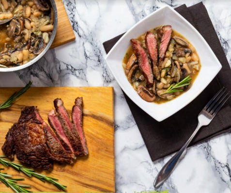

Read the entire recipe from start to finish. Trust us! You'll be more familiar with the steps and cooking the dish will be a METHOD stroll in the park. Before you begin give the vegetables a quick rinse.
Put the kettle on & let the beef rest
Prepare the Ingredients
Cook the vegetables
Put the kettle on again
Add the cannellini beans
Cook the steak
Finish the dish